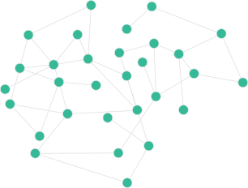
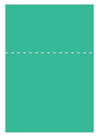
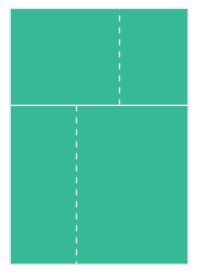
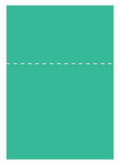
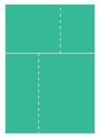
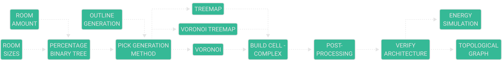
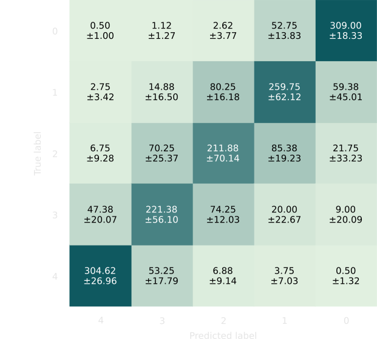

TOPOLOGICAL
GRAPHS IN
ARCHITECTURE
preliminaries
contribution
outcome
conclusion
- Graphs and Topology in Architecture
- Feedback in Early Design Stages
- Machine Learning in Architectural Design
- Synthetic Architecture Datasets
PRELIMINARIES
GRAPH THEORY

Taj Mahal

La Rotonda

Villa Savoye

Taj Mahal

La Rotonda

Villa Savoye

Degree

Betweenness

Closeness
Shortest Path

Spanning Tree

Visibility Graph
TOPOLOGY

SPACE SYNTAX

Axial Map

Convex Space

Isovist
SPACE PARTITIONING
 



Recursive Subdivision

Aggregation
CONTRIBUTION
SYNTHETIC DATA GENERATION
MACHINE LEARNING

PROCESS

DATA GENERATION

POST-PROCESSING

MACHINE LEARNING
PARAMETRIC FRAMEWORK

Input

Binary Tree

Outline

Iteration 1

Iteration 2

Iteration 3
SPACE PARTITIONING


POST-PROCESSING

Connectivity Graph

MST
Door Placement
ARCHITECTURAL RULES

Low Ratio

Sharp Angle
Good Layout
ENERGY SIMULATION

MACHINE LEARNING
GRAPH NEURAL NETWORKS
Classification

Regression

OUTCOME


Dataset


Dataset
Regression

Classification
Classification
Regression
CONCLUSION
Graphs and Topology in Architecture
Kreuzberg
Axial Graph
Length

Centrality

La Rotonda

Topological Graph

Degree

Depth
Feedback in Early Design Stages

Machine Learning in Architectural Design


Synthetic Architecture Datasets